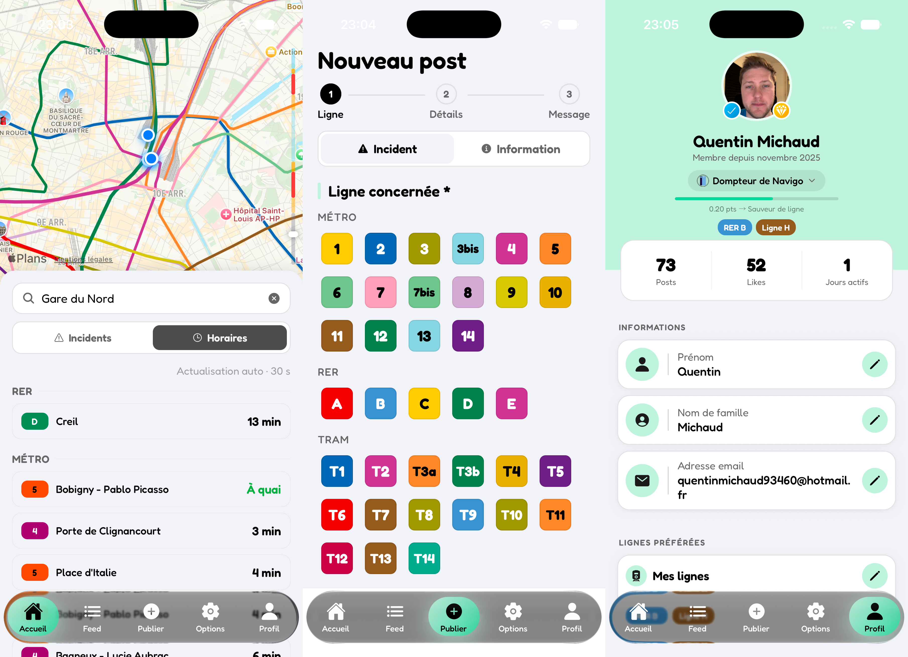

Projet indépendant · Depuis 2026
Lini — application mobile de signalement communautaire
Une application qui permet aux usagers des transports en commun de signaler en temps réel ce qu'ils observent sur le réseau. Déployée sur 30 villes de France, disponible sur iOS et Android. Projet mené seul : conception produit, design des interfaces, développement, backend, monétisation et acquisition.
- Application React Native / Expo publiée sur les deux stores
- Backend temps réel et authentification sur Firebase
- Abonnements et paiements via RevenueCat
- Acquisition utilisateurs pilotée par campagnes Meta Ads
React NativeExpo
FirebaseRevenueCat
FigmaMeta Ads
Découvrir Lini →